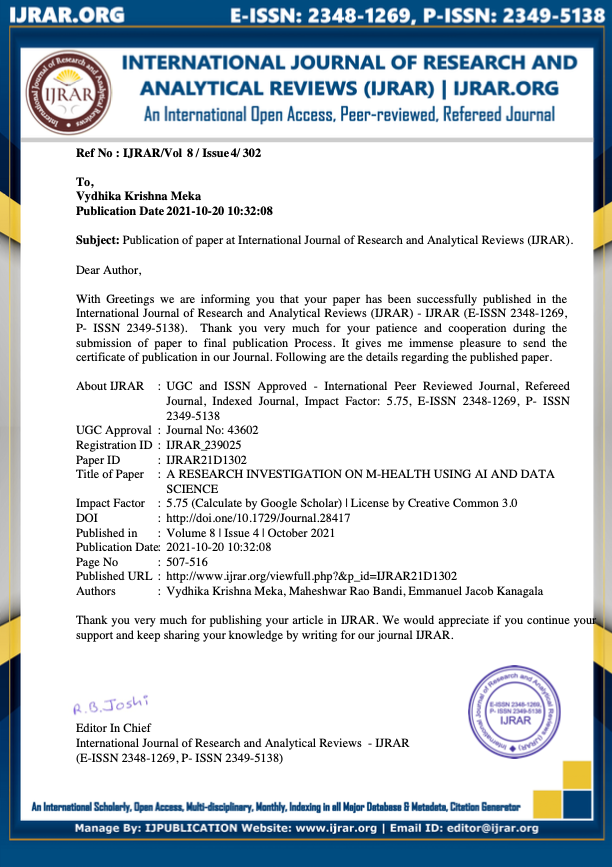

The main idea behind this study is to use electronic devices like smartphones to track patients' health problems. This is the most massive technological advancement of our time. To create a more structured medical system, I've included artificial intelligence and data analytics in my study paper. Electronic health records (EHRs) and other sorts of data have been utilized in this pharmaceutical study. As mobile applications and medical systems continue to proliferate at a breakneck pace. This breakthrough has the potential to alter people's lives and contribute to the development of new ways to manage m-health data using AI and big data.
Learn moreMobile health (m-health) refers to the use of mobile phones and other patient monitoring equipment to track one's health. It is frequently regarded as the most significant technological innovation in the contemporary era. Artificial intelligence (AI) and big data analytics have recently been applied to m-health in order to provide a more efficient healthcare system. In modern medical research, several types of data such as electronic health records (EHRs), medical photographs, and sophisticated text that are diverse, poorly comprehended, and disorganised have been utilised. Due to the rise of mobile applications and healthcare systems, this is a significant factor for the emergence of numerous unorganised and unstructured datasets. In this research, a comprehensive review of the use of AI and big data analytics to improve the m-health system is conducted. Various AI-based big data algorithms and frameworks are also examined in terms of data source, methodologies used, and application area. This study investigates the use of AI and big data analytics to provide users with insights and enable them to plan, particularly for m-unique health's issues, and presents a model based on AI and big data analytics for m-health. The findings of this research will influence the development of approaches for handling m-health data more efficiently using a mix of AI and big data as a source.
LEARN MORE